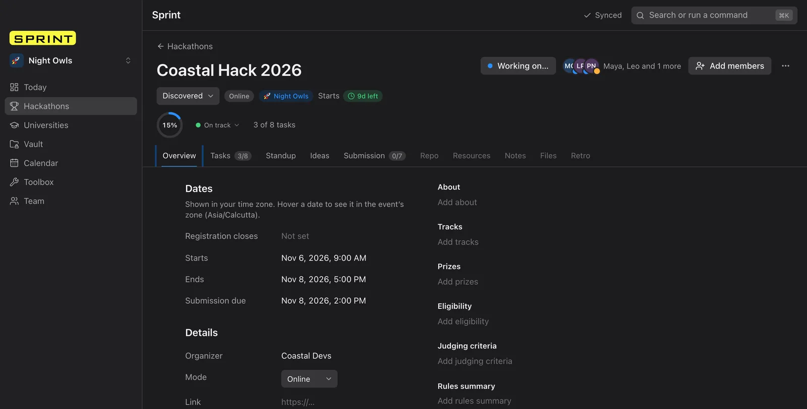
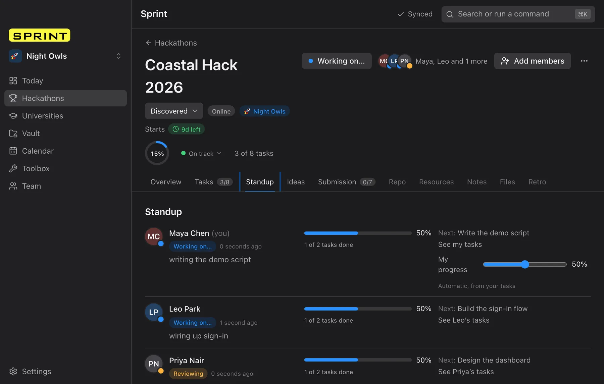

Run hackathons with your friends.
Tasks, ideas and deadlines for your whole team, in one fast desktop app.
Other downloads
One window for the whole hackathon.
Dates, tasks, progress and who is doing what. Always up to date, even offline.

Standup, without the meeting.
Everyone sets a short status. You see progress per person at a glance.

Demo data.
Built for the team behind the submission.
-
Teams
Paste a link and SPRINT fills in the hackathon. Share tasks, ideas and a submission checklist, and invite friends with a short code.
-
Progress per person
A progress ring, an honest health label and a status from each teammate, so you know who needs a hand.
-
Works offline
Keep working on a train or bad Wi-Fi. Changes sync with your teammates as soon as you reconnect.
Install help
SPRINT is not code-signed yet, so your computer shows a warning the first time. It is safe to continue.
macOS
- Open the
.dmgand drag SPRINT into Applications. - Right-click (or Control-click) SPRINT and choose Open, then Open again.
- If you only see "Move to Bin": open System Settings, Privacy & Security and click Open Anyway.
Windows
- Run the installer.
- On "Windows protected your PC", click More info.
- Click Run anyway.